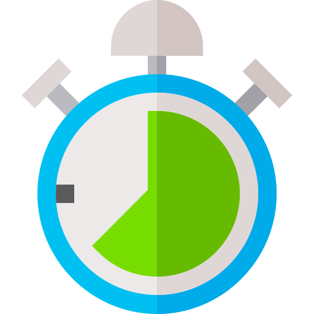

Stay F.I.T.T
Different kinds of exercises have different effects. If you’re looking to improve your aerobic fitness, do exercises that follow F.I.T.T. Aerobic exercises will help to strengthen your heart, so that physical activities like walking up the stairs or carrying groceries can be less tiring.
F.I.T.T stands for:
-

Frequency of activity
How often you are active.
-

Intensity of activity
How hard your heart has to work during the activity.
-

Time of activity
How long you stay active.
-
Type of activity
What you are doing.
Let’s go through each one and see how you can apply it to your life!